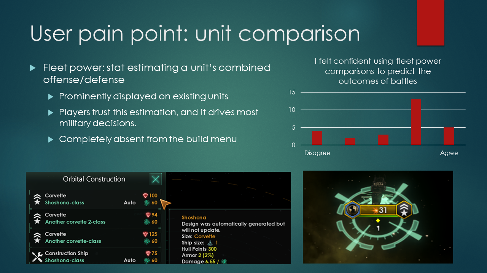
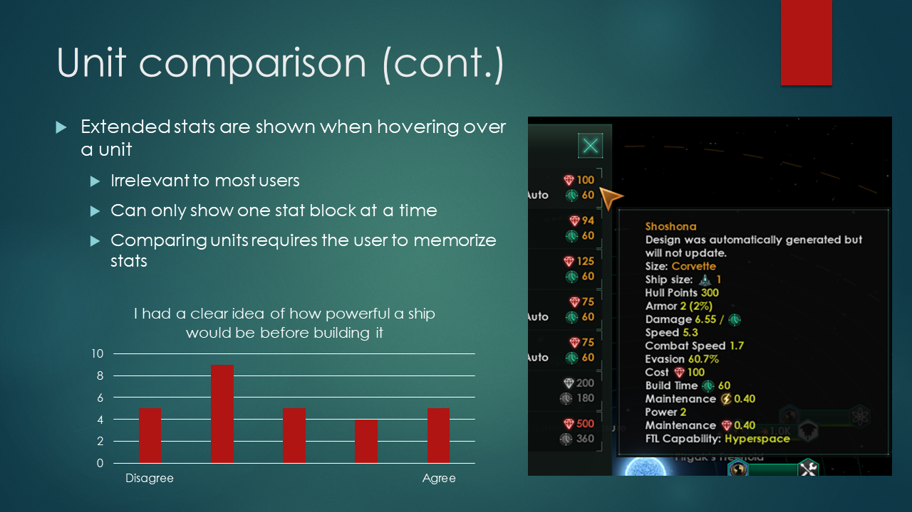
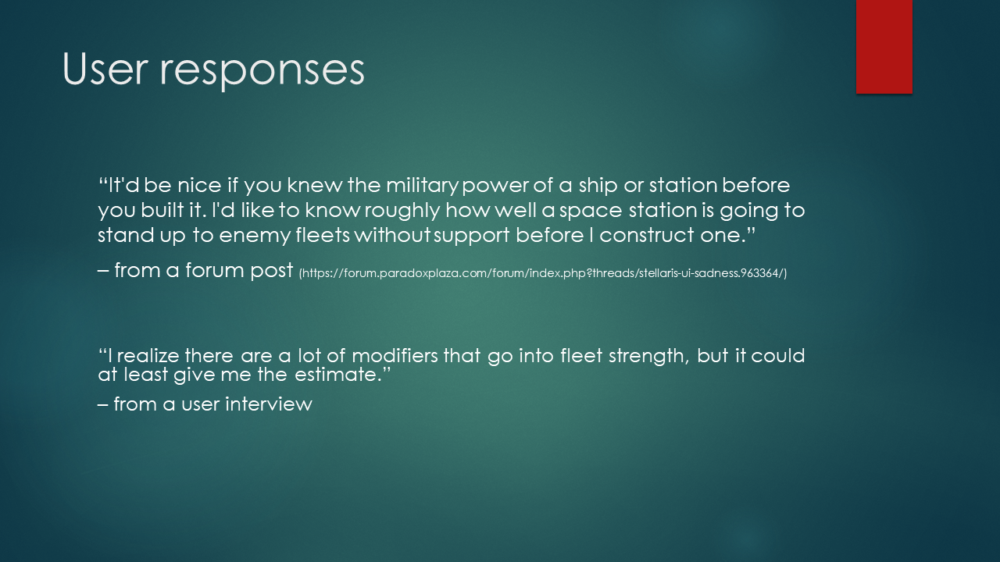
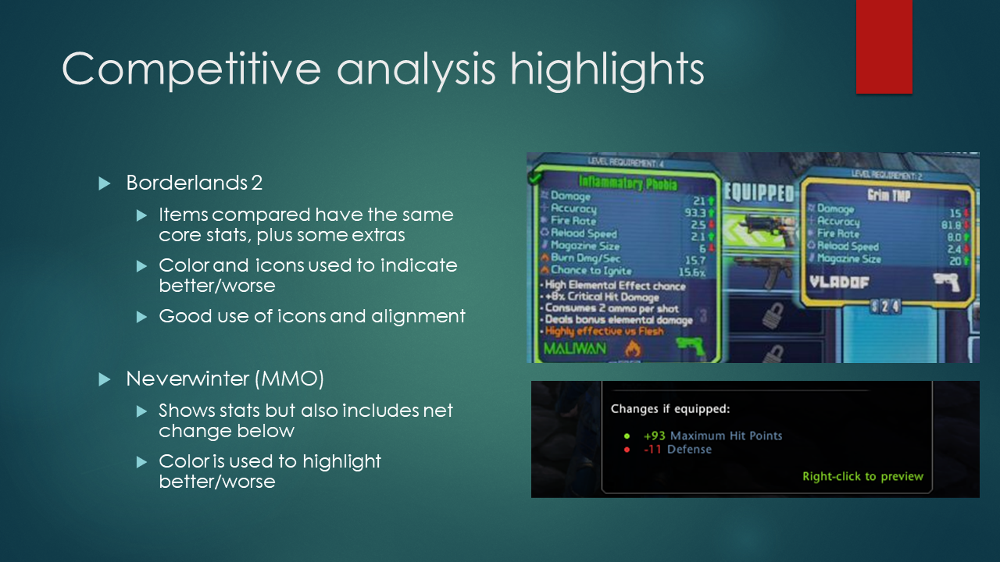
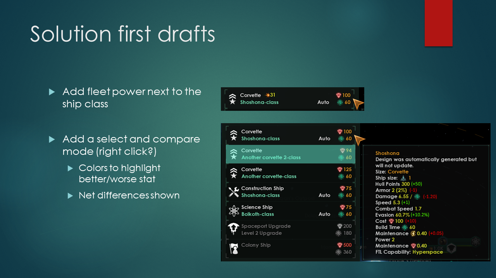
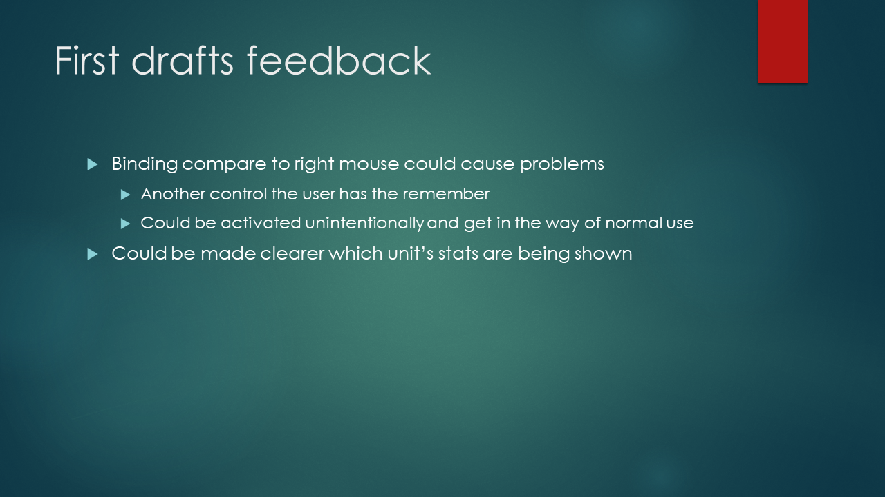
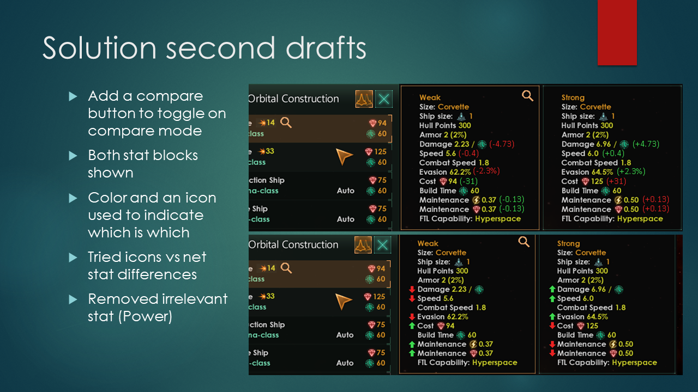
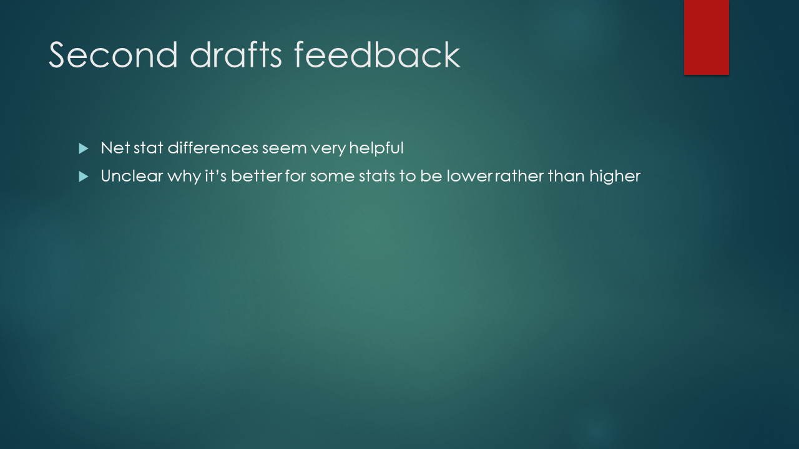
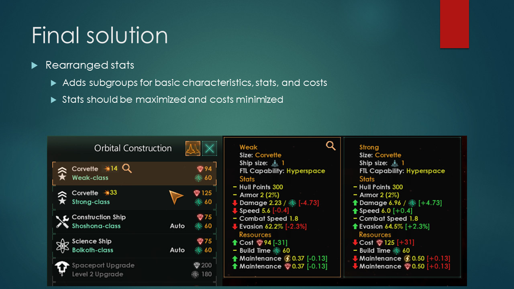

This presentation represents a distilled overview of a thorough UX design iteration process I carried out on a portion of the user interface found in the Paradox Interactive game, Stellaris. This process can be divided into a few major steps. First, I played the game and interviewed players to identify potential pain points, and then used surveys to narrow in on what aspects of the user experience were actually issues. Next, I conducted competitive analysis to determine how other games handled these problems and analysed the strengths and weaknesses of each approach according to design principles. Finally, I created several drafts of improved interfaces, iterating on feedback for each.








